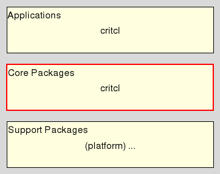

critcl::iassoc - CriTcl Utilities: Tcl Interp Associations
Welcome to the C Runtime In Tcl, CriTcl for short, a system to build C extension packages for Tcl on the fly, from C code embedded within Tcl scripts, for all who wish to make their code go faster.
This document is the reference manpage for the critcl::iassoc package. This package provides convenience commands for advanced functionality built on top of the critcl core.
With it a user wishing to associate some data with a Tcl interpreter via Tcl's Tcl_(Get|Set)AssocData() APIs can now concentrate on the data itself, while all the necessary boilerplate around it is managed by this package.
Its intended audience are mainly developers wishing to write Tcl packages with embedded C code.
This package resides in the Core Package Layer of CriTcl.

This command defines a C function with the given name which provides access to a structure associated with a Tcl interpreter.
The C code code fragment struct defines the elements of said structure, whereas the fragments constructor and destructor are C code blocks executed to initialize and release any dynamically allocated parts of this structure, when needed. Note that the structure itself is managed by the system.
The new function takes a Tcl_Interp* pointer refering to the interpreter whose structure we wish to obtain as the first argument, plus the specified arguments and returns a pointer to the associated structure, of type "name_data" (see below).
The arguments are a dictionary-like list of C types and identifiers specifying additional arguments for the accessor function, and, indirectly, the constructor C code block. This is useful for the supplication of initialization values, or the return of more complex error information in case of a construction failure.
The C types associated with the structure are derived from name, with "name_data__" the type of the structure itself, and "name_data" representing a pointer to the structure. The C code blocks can rely on the following C environments:
Pointer to the structure (type: name_data) to initialize.
Pointer to the Tcl interpreter (type: Tcl_Interp*) the new structure will be associated with.
A C code label the constructor can jump to should it have to signal a construction failure. It is the responsibility of the constructor to release any fields already initialized before jumping to this label.
The names of the constructor arguments specified with arguments.
Pointer to the structure being released.
Pointer to the Tcl interpreter the structure belonged to.
The example shown below is the specification of a simple interpreter-associated counter. The full example, with meta data and other incidentals, can be found in the directory "examples/queue" of the critcl source distribution/repository.
package require Tcl 8.4
package require critcl 3.1
critcl::buildrequirement {
package require critcl::iassoc
}
critcl::iassoc::def icounter {} {
int counter; /* The counter variable */
} {
data->counter = 0;
} {
/* Nothing to release */
}
critcl::ccode {
... function (...)
{
/* Access to the data ... */
icounter_data D = icounter (interp /* ... any declared arguments, here, none */);
... D->counter ...
}
}
# or, of course, 'cproc's, 'ccommand's etc.
package provide icounter 1
Andreas Kupries
This document, and the package it describes, will undoubtedly contain bugs and other problems. Please report such at https://github.com/jcw/critcl. Please also report any ideas for enhancements you may have for either package and/or documentation.
C code, Embedded C Code, Tcl Interp Association, code generator, compile & run, compiler, dynamic code generation, dynamic compilation, generate package, linker, on demand compilation, on-the-fly compilation, singleton
Glueing/Embedded C code
Copyright © 2011-2012 Andreas Kupries